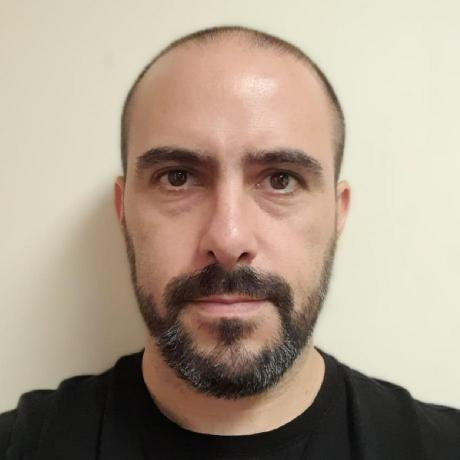

Salgueiro Jose Manuel

Analista de Soporte Tecnico. Alumno de Udemy en Web Developer BootCamp
2025.
Educacion
- 2019-actualidad: Ingenieria en Computacion (en curso).
- 2010-2019: Ingenieria Electrica (Incompleto, hasta 3er anio).
Experiencia Laboral
- 2012-2022: Croupier en Casino Central de Mar del Plata.
-
2022-actualidad: Analista de Soporte Tecnico en Div Computos Casino
Central de Mar del Plata.
Habilidades
- Trato de buscar solucion a problemas que se etiquetan como insolubles.
- Puedo usar analogias didacticas para trasladar conceptos tecnicos a usuarios/clientes.
- Empatia frente a problemas tecnicos de usuarios.
- Soporte Tecnico de GNU/Linux
- Reparacion de equipos.
- Instalacion de equipos. Creacion de imagenes para equipos.
Acerca de mi
Contacto